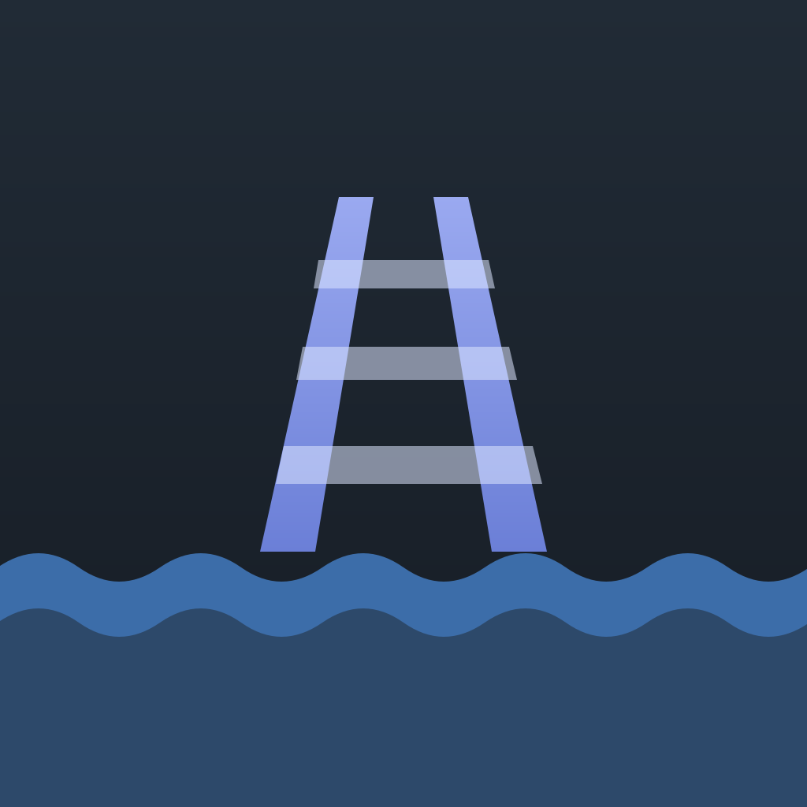

Slipway
Git worktrees, terminals, GitHub and your coding agents, in one desktop window.
Slipway keeps a worktree per branch, opens a terminal in each, shows the issue, pull request and
project-board status beside it, and lets you watch what your agents are doing. Everything runs on your
computer with your own git, gh and agent sign-ins.
Download
Private build. The links work when you are signed in to GitHub with access to the
OscarC178/devhub repository. No access yet? Ask Oscar.
Install
Mac
- Open
Slipway.dmgand drag Slipway to Applications. - Open it. macOS blocks it the first time (it is not notarised): go to System Settings › Privacy & Security, scroll down and click Open Anyway.
- That is it. Slipway updates itself from then on.
Windows
- Put
Slipway.exeanywhere, the Desktop is fine, and double-click it. - SmartScreen says "Windows protected your PC" the first time (it is not signed): click More info, then Run anyway. It unpacks itself and opens a few seconds later.
- Windows copies do not update themselves. Come back here for a new version.
What you need
- git, and the GitHub CLI signed in:
gh auth login. - An agent CLI if you want the agent features: Claude Code, Codex, Gemini or Grok, signed in.
- macOS 11 or later on Apple silicon, or 64-bit Windows 10 or 11.